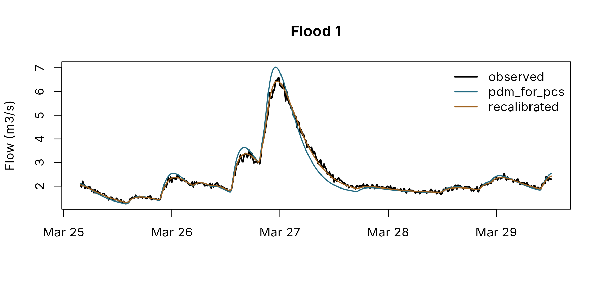

Comparing calibrations and PDM for PCs files
pdmS7 documentation
Source:vignettes/comparing-calibrations.Rmd
comparing-calibrations.RmdTwo calibrations of the same catchment are worth comparing when one
replaces the other: a model calibrated years ago in PDM for PCs against
a new one, two candidates from different searches, or a model before and
after a change of structure. The comparison is only fair if both run on
the same rain, from the same start, and are scored on the same windows
by the same measures. compare_calibrations() does that, for
models from any source, including PDM for PCs input files.
Reading a PDM for PCs file
PDM for PCs saves a model as a *.inp text file: a title,
the parameter list, the model structure line, the catchment area and the
event periods. read_pdm_inp() reads the model from it into
a configuration. The package ships the two examples from the PDM for PCs
manual:
path <- system.file("examples", "standard.inp", package = "pdmS7")
cat(readLines(path)[c(1, 8:21, 26:29)], sep = "\n")
#> 1/4 hr Raingauge Data- standard PDM configuration
#> indx xs smpstp smptol xs name (<= 8 chars)
#> 1 0.9 .001 .05 'rainfac'
#> 0 0.0 .2 .02 'cmin'
#> 1 135. 1. 1. 'cmax'
#> 1 .63 0.001 .05 'b'
#> 0 2.5 3. .1 'be'
#> 1 3.1 0.001 .8 'k1'
#> 0 0. .2 .01 'k2'
#> 1 13.0 .2 1. 'kb'
#> 1 85000. 40. 1. 'kg'
#> 0 0. 1. .5 'St'
#> 1 2.42 0.3 .05 'bg'
#> 0 0. 0.1 .05 'qconst'
#> 0 0.17 0.25 0.2 'tdly'
#> loss runoff surface base tdly
#> 1 0 22 3 -13 /
#> Catchment area (km**2)
#> 100.5
old <- read_pdm_inp(path, dt = 0.25)
str(old[c("distribution", "recharge", "surface", "groundwater", "fc", "td", "area_km2")])
#> List of 7
#> $ distribution:List of 4
#> ..$ type: chr "pareto"
#> ..$ cmin: num 0
#> ..$ cmax: num 135
#> ..$ b : num 0.63
#> $ recharge :List of 4
#> ..$ type: chr "standard"
#> ..$ kg : num 85000
#> ..$ bg : num 2.42
#> ..$ st : num 0
#> $ surface :List of 3
#> ..$ type: chr "cascade"
#> ..$ k1 : num 3.1
#> ..$ k2 : num 3.1
#> $ groundwater :List of 3
#> ..$ type : chr "cubic"
#> ..$ kb : num 2197
#> ..$ solver: chr "smith"
#> $ fc : num 0.9
#> $ td : num 0.17
#> $ area_km2 : num 100
attr(old, "optimised")
#> [1] "rainfac" "cmax" "b" "k1" "kb" "kg" "bg"The file and pdmS7 describe the same model in slightly different terms. The reader applies the manual’s conventions:
| In the file | Here |
|---|---|
loss, runoff, surface,
base codes, such as 1 0 22 3
|
Pareto store, standard recharge, cascade of two linear stores, cubic store |
cubic kb = 13 |
kb = 13³ = 2197: the file holds the cube root, to avoid
very large numbers |
k2 = 0 |
k2 = k1: two equal reservoirs |
tdly in the structure line, -13 |
the delay is the 13th parameter of the list; a positive value is the delay in hours |
rainfac, qconst
|
fc, qc (m3/s) |
| lognormal (5) or exponential (6) loss model |
cmin and b as the mean and standard
deviation of log capacity, or cmin as the mean |
| cubic store | stepped by Smith’s method, as PDM for PCs does |
'GW' block, and ku, Dbu,
springfrac, abstcon, abstfac,
Gsmax, wellfac
|
the groundwater extension, with the well datum from the block |
The time step is not in the file. PDM for PCs takes
it from the model set-up, so give it as dt: 15 minutes by
default.
What is kept, and what is ignored. The title, the
stations, the event periods and the parameters marked for optimisation
are kept as attributes. Error-prediction, rating and raingauge-weighting
settings are not part of the simulation model; the reader notes them
(attr(old, "notes")) and leaves them out. Give the
catchment rainfall in the forcing, as the weighted gauges would have
made it.
What is refused. Several hydrological zones, demand recharge and the unrestricted split (runoff models 2 to 4), the power distribution, exponential stores and a cubic surface store have no faithful equivalent yet. The reader stops with a message naming what it found, rather than guess.
Writing one
write_pdm_inp() writes any configuration, or a project’s
candidate, as a file PDM for PCs can load (Model > Load Previous PDM
Configuration), with the same conventions in reverse. It needs a title
and one event period, and can mark parameters for optimisation:
new <- old
new$surface$k1 <- 4.2
out <- file.path(tempdir(), "example-recalibrated.inp")
write_pdm_inp(new, out, title = "Example Brook: recalibrated in pdmS7",
event = c("2020-10-01 09:00", "2021-04-01 09:00"),
optimised = c("k1", "kb"))
cat(readLines(out)[c(1, 9:21)], sep = "\n")
#> Example Brook: recalibrated in pdmS7
#> 0 0.9 0.1 0.05 'rainfac'
#> 0 0 0.1 0.05 'cmin'
#> 0 135 0.1 0.05 'cmax'
#> 0 0.63 0.1 0.05 'b'
#> 0 2.5 0.1 0.05 'be'
#> 1 4.2 0.1 0.05 'k1'
#> 0 3.1 0.1 0.05 'k2'
#> 1 13 0.1 0.05 'kb'
#> 0 85000 0.1 0.05 'kg'
#> 0 0 0.1 0.05 'St'
#> 0 2.42 0.1 0.05 'bg'
#> 0 0 0.1 0.05 'qconst'
#> 0 0.17 0.1 0.05 'tdly'Writing then reading gives back the same model, for every structure the format holds. A structure it cannot hold, such as an exponential groundwater store, is refused with the reason.
Comparing two calibrations
compare_calibrations() takes a named list of models.
Each may be a configuration, a model, a YAML configuration file, a
*.inp file, or a calibration project folder, whose
candidate is used. Here the original model is the PDM for PCs file, and
the recalibration the configuration just written, on a made-up record at
15 minutes:
set.seed(4)
n <- 96 * 180
forcing <- data.frame(time = as.POSIXct("2020-10-01", tz = "UTC") + 900 * (seq_len(n) - 1),
rain = ifelse(stats::runif(n) < 0.025, stats::rexp(n, 0.8), 0),
pet = 0.02)
truth <- new
truth$surface$k1 <- 4.5
model <- pdm_from_config(truth)
observed <- run_pdm(model, forcing, initial_state_from_flow(model, 2, 0.7))$output$q_m3s *
exp(stats::rnorm(n, 0, 0.03))
cmp <- compare_calibrations(
list(pdm_for_pcs = path, recalibrated = out),
forcing, observed, warmup = 96 * 14,
windows = list(first = c("2020-10-15", "2021-01-15"), second = c("2021-01-16", "2021-03-29")),
markers = c("Q1", "Q5")
)
cmp
#> Comparison of 2 models: pdm_for_pcs, recalibrated
#>
#> Parameters that differ
#> parameter pdm_for_pcs recalibrated
#> surface.k1 3.1 4.2
#>
#> Scores
#> window score pdm_for_pcs recalibrated
#> first nse 9.627e-01 9.917e-01
#> first log_nse 9.702e-01 9.914e-01
#> first kge 9.298e-01 9.907e-01
#> first volume_error 9.841e-05 9.468e-05
#> first peak_error 7.027e-02 -2.549e-02
#> first fdc_high 6.064e-02 5.016e-03
#> first fdc_low 1.180e-01 1.139e-01
#> second nse 9.682e-01 9.935e-01
#> second log_nse 9.739e-01 9.925e-01
#> second kge 9.381e-01 9.903e-01
#> second volume_error -4.567e-04 -5.330e-05
#> second peak_error 6.647e-02 -2.452e-02
#> second fdc_high 5.831e-02 9.511e-03
#> second fdc_low 2.104e-01 1.895e-01
#>
#> Thresholds (CSI)
#> window threshold pdm_for_pcs recalibrated
#> first Q1 0.6666667 0.5000000
#> first Q5 0.9285714 1.0000000
#> second Q1 0.5000000 1.0000000
#> second Q5 0.7777778 0.8571429
#>
#> Largest 10 floods: median |peak error| and |timing error| (h)
#> pdm_for_pcs 0.052 0.50
#> recalibrated 0.026 0.25The printout gives, in turn:
- the parameters that differ: everything else is the same;
- the scores in each window: NSE, log NSE, KGE, volume, peak and flow duration errors;
- threshold scores against flow markers from the observed record (here Q1 and Q5, the flows exceeded 1 and 5 per cent of the time; QMED by default, given two water years);
- the largest floods: each model’s median peak and timing error over them.
Every model starts the same way, from the first observed flow in
steady state, and nothing before warmup is scored. The full
tables are in the result: cmp$parameters,
cmp$scores, cmp$thresholds and
cmp$events, one row per flood with each model’s errors.
plot(cmp)
The largest flood of the record: observed flow and the two models.
plot(cmp, event = 3) shows the third largest flood, and
plot(cmp, window = "second") a whole window.
Reading a comparison fairly
- Same rain. A model calibrated in PDM for PCs was fitted to that software’s rainfall, often a weighted mix of gauges. If the forcing here is a different mix, some of the difference in the scores is the rain, not the model. Give both models the same catchment rainfall, and state which.
- Same start. The comparison starts both models from the first observed flow. Warm-up removes most of the effect of the start; make it long enough for the slowest store.
- Same windows. Score both on windows neither was calibrated on, where possible. A model always looks best on the period it was fitted to.
- The time step. Every model must have the forcing’s step. A model calibrated at another step is refused rather than run at the wrong one.
- Small differences are ties. As in a structure comparison, a difference in NSE of a few thousandths says nothing; differences in the floods usually say more.